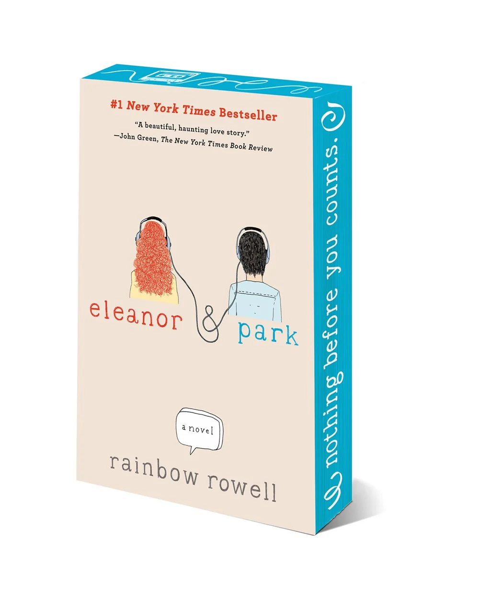

La Química del Amor -
Ali Hazelwood

La química del amor de Ali Hazelwood es una comedia romántica que narra la historia de Bee Königswasser, una neurocientífica que consigue su trabajo soñado en la NASA, pero su entusiasmo se enfría al descubrir que debe trabajar con Levi Ward, un colega que parece odiarla. Mientras avanzan en su proyecto, lo que empieza como tensión y rivalidad da paso a una conexión inesperada, llena de química y autodescubrimiento. Es una historia de amor, humor y segundas oportunidades.
La Teoria del Amor -
Ali Hazelwood

La teoría del amor de Ali Hazelwood es una comedia romántica que sigue a Elsie Hannaway, una profesora de física adjunta que lleva una doble vida: científica dedicada de día y falsa novia ocasional de noche, para ayudar a clientes que necesitan impresionar en eventos sociales. Todo se complica cuando Jack Smith, un frío y exitoso físico teórico, entra en su vida. Jack no solo es el hermano del cliente más reciente de Elsie, sino también alguien que pone en peligro su carrera al evaluar el departamento donde ella aspira a trabajar.
La Hipotesis del Amor -
Ali Hazelwood

La hipótesis del amor de Ali Hazelwood es una comedia romántica que narra la historia de Olive Smith, una estudiante de doctorado que, para convencer a su mejor amiga de que ha superado a su ex, finge una relación con Adam Carlsen, un temido profesor conocido por su actitud distante. Lo que comienza como una mentira inocente se complica cuando Olive y Adam empiezan a conocerse de verdad, y los sentimientos que surgen entre ellos desafían lo que ambos esperaban.
Heartstopper -
Alice Oseman
Heartstopper de Alice Oseman es una novela gráfica que narra la historia de Charlie Spring, un chico tímido y abiertamente gay, y Nick Nelson, un jugador de rugby popular y extrovertido. Aunque al principio parecen muy diferentes, su amistad pronto se convierte en algo más profundo cuando ambos empiezan a explorar sus sentimientos. Mientras Nick enfrenta el proceso de descubrir su sexualidad y Charlie lidia con inseguridades y las consecuencias del acoso que sufrió en el pasado, juntos aprenden sobre la aceptación, el amor y el valor de ser uno mismo. Con una narrativa cálida y honesta, Heartstopper celebra la amistad, el apoyo mutuo y el poder del amor joven.
Eleanor & Park -
Rainbow Rowell

Eleanor & Park de Rainbow Rowell cuenta la historia de dos adolescentes muy diferentes: Eleanor, una chica excéntrica y de familia disfuncional, y Park, un chico tranquilo de origen coreano. A pesar de sus diferencias, se enamoran a través de su amor compartido por la música y los cómics, mientras enfrentan desafíos personales y familiares. La novela explora el amor adolescente, la superación de obstáculos emocionales y la importancia de la aceptación, mostrando cómo la conexión entre ambos les ayuda a lidiar con las dificultades en sus vidas.
El Rey Malvado -
Holly Black

El Rey Malvado de Holly Black es el primer libro de la trilogía El Príncipe Cruel. La historia sigue a Jude, una humana que vive en el peligroso y fascinante mundo de las hadas, tras la muerte de sus padres. Jude y sus hermanas fueron llevadas a la Corte Real de las hadas, donde las criaturas mágicas la desprecian por ser humana. A pesar de esto, Jude sueña con obtener poder y reconocimiento en ese mundo, y su mayor desafío es Cardan, el príncipe arrogante y cruel, quien la humilla constantemente. A medida que Jude se adentra en un juego de intriga política y traiciones, se enfrenta a decisiones difíciles que podrían cambiar su destino y el de todo el reino.